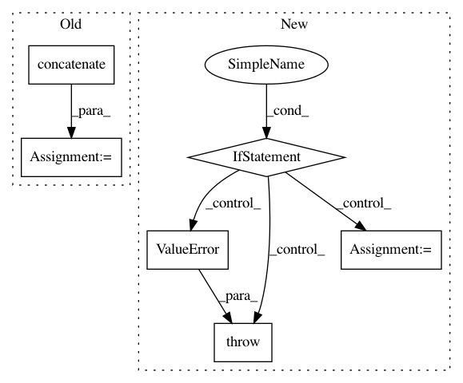

2e7c0700d00da702cdccb7c19b6fe1857b5bd1b7,imblearn/under_sampling/prototype_generation/cluster_centroids.py,ClusterCentroids,_sample,#ClusterCentroids#Any#Any#,111
Before Change
else:
target_class_indices = np.flatnonzero(y == target_class)
idx_under = np.concatenate(
(idx_under, target_class_indices), axis=0)
X_resampled = np.concatenate((centroids))
if sparse.issparse(X):
After Change
else:
self.voting_ = "soft"
else:
if self.voting in VOTING_KIND:
self.voting_ = self.voting
else:
raise ValueError(""voting" needs to be one of {}. Got {}"
" instead.".format(VOTING_KIND, self.voting))
X_resampled, y_resampled = [], []
for target_class in np.unique(y):
if target_class in self.ratio_.keys():
n_samples = self.ratio_[target_class]
In pattern: SUPERPATTERN
Frequency: 3
Non-data size: 6
Instances
Project Name: scikit-learn-contrib/imbalanced-learn
Commit Name: 2e7c0700d00da702cdccb7c19b6fe1857b5bd1b7
Time: 2017-08-24
Author: g.lemaitre58@gmail.com
File Name: imblearn/under_sampling/prototype_generation/cluster_centroids.py
Class Name: ClusterCentroids
Method Name: _sample
Project Name: scikit-image/scikit-image
Commit Name: c890a06b4ef71d5827ff9a399e203a37af0191a5
Time: 2018-12-06
Author: devel@sciunto.org
File Name: skimage/exposure/exposure.py
Class Name:
Method Name: _bincount_histogram
Project Name: numerai/submission-criteria
Commit Name: 8b8a963d4bd19330d06a553bd93741b147bf2668
Time: 2017-09-15
Author: phil@pcmonk.me
File Name: originality.py
Class Name:
Method Name: originality_score